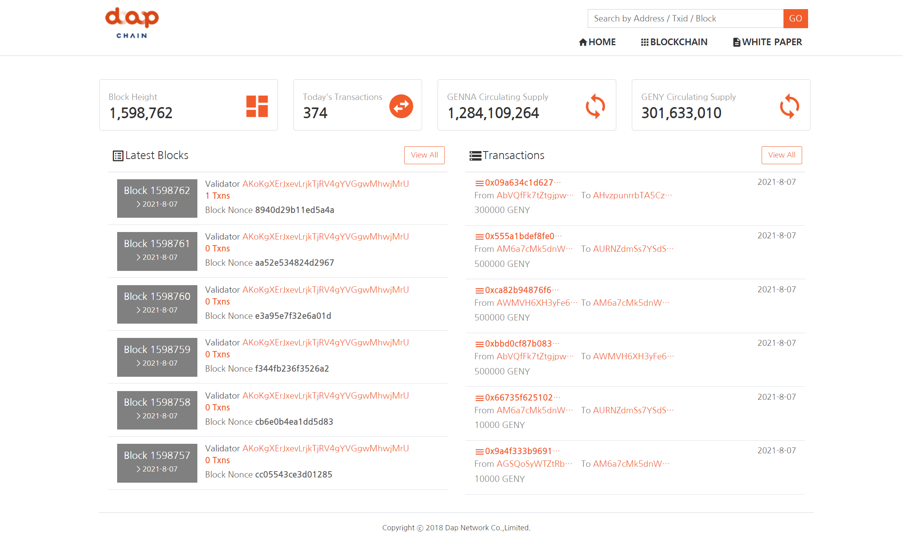
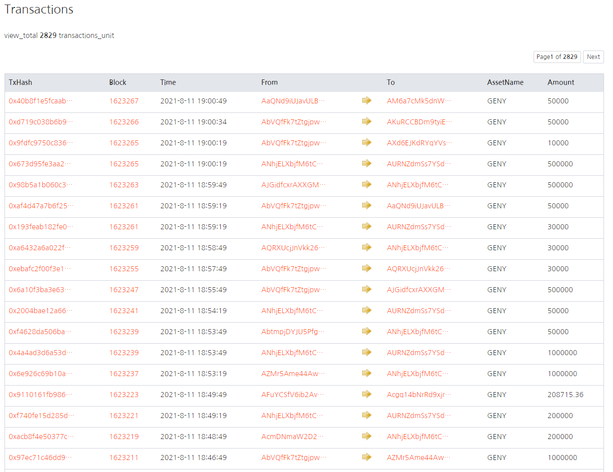

Blockchain 시스템
Blockchain시스템은 회사 메인 서비스중 하나로, 회사에서 발급한 코인 Transcation및 Amount를 확인하는 사이트 입니다.
백엔드 로직은 간단한 프로젝트로 READ하는 작업만 있습니다. 페이지 수가 적어 혼자 개발하기에 충분했습니다.
Block 사이즈와 Transcation을 실시간으로 처리 했어야 했는데, WEB Socket을 사용하여 실시간으로 구현했습니다. WEB Socket은 당시
회사에서 처음으로 사용하는 Task 였는데, 발표자료로 만들어 팀안에서 필요할때 사용하도록 했던 기억이 남는 프로젝트입니다.
프로젝트는 Click WEB site 에서 확인할 수 있습니다.
Technologies:
- - JAVA
- - Spring Framework
- - Spring WEB Socket
- - JSP
- - MariaDB
- - MyBatis
- - AWS (EC2 & S3)
- - OS(CentOS7)
WEB Socket 발표자료
코인 거래내역
